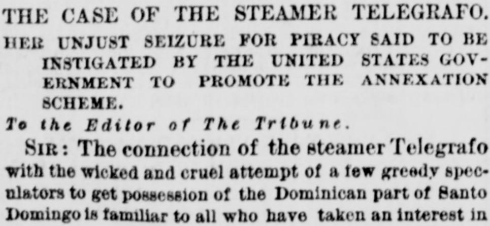
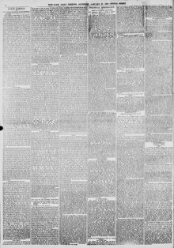

Sik: The connection of the steamer Telegrafo with the wicked andSik: La conexión del vapor Telegrafo con lo perverso y
New-York Tribune. New York [N.Y.], January 27, 1872. Page 4. View the originalVer el original


See the full pageVer la página completaIn a letter to the editor, the writer argues that the seizure of the steamer Telégrafo for piracy was instigated by the United States government to promote the annexation of Santo Domingo. British courts have confirmed a Tortola jury award of £18,000 in indemnity to owners George A. Philips and Philips Collins for the seizure and illegal sale. The letter recalls that Dominican exiles chartered the Telégrafo at St. Thomas early in 1869, first under the American flag, to operate against Báez, then rearmed it under the British flag at Inagua.En una carta al director, el autor sostiene que la captura del vapor Telégrafo por piratería fue instigada por el gobierno de Estados Unidos para promover la anexión de Santo Domingo. Los tribunales británicos han confirmado una indemnización de £18,000 concedida por un jurado de Tórtola a los propietarios George A. Philips y Philips Collins por la captura y venta ilegal. La carta recuerda que exiliados dominicanos fletaron el Telégrafo en Santo Tomás a principios de 1869, primero bajo bandera estadounidense, para operar contra Báez, y luego lo rearmaron bajo bandera británica en Inagua.
FULL TEXT:TEXTO COMPLETO:
THE CASE OF THE STEAMER TELEGRAFO.EL CASO DEL VAPOR TELEGRAFO.
HER UNJUST SEIZURE FOR PIRACY—A MEASURE INSTIGATED BY THE UNITED STATES GOVERNMENT TO PROMOTE THE ANNEXATION SCHEME.SU INJUSTA CAPTURA POR PIRATERÍA—UNA MEDIDA INSTIGADA POR EL GOBIERNO DE LOS ESTADOS UNIDOS PARA PROMOVER EL PLAN DE ANEXIÓN.
To the Editor of The Tribune.Al Editor de The Tribune.
SIR: The connection of the steamer Telegrafo with the wicked and cruel attempt of a few speculators to get possession of the Dominican part of San Domingo is familiar to all who have taken an interest in the subject. The English Court of Chancery having now confirmed the decision of the Admiralty Court of Tortola, given in May, 1870, this case becomes one of great interest to us by the action of our Government in seizing her on the alleged ground of her being a pirate; and this case acquires additional interest in the fact that the high Courts of the British Empire have decided a claim against a British subject, and in favor of a citizen of the United States, Mr. George A. Philips, (of the firm of George A. Philips & Co. of St. Thomas,) formerly of Collins of New-York, to whom a jury of merchants awarded £18,000 indemnity for the seizure and illegal sale of the Telegrafo, of which he was the owner. The history of this remarkable case is as follows:SEÑOR: La conexión del vapor Telegrafo con el perverso y cruel intento de unos pocos especuladores de apoderarse de la parte dominicana de Santo Domingo es familiar a todos los que han tomado interés en el tema. Habiendo la Corte de Cancillería inglesa confirmado ahora la decisión de la Corte del Almirantazgo de Tórtola, dada en mayo de 1870, este caso se convierte en uno de gran interés para nosotros por la acción de nuestro Gobierno al capturarlo sobre el presunto fundamento de ser un pirata; y este caso adquiere interés adicional en el hecho de que las altas Cortes del Imperio británico han decidido una reclamación contra un súbdito británico, y en favor de un ciudadano de los Estados Unidos, el Sr. George A. Philips, (de la firma de George A. Philips & Co. de Santo Tomás,) antes de Collins de Nueva York, a quien un jurado de comerciantes otorgó £18,000 de indemnización por la captura y venta ilegal del Telegrafo, del cual era propietario. La historia de este notable caso es la siguiente:
The Telegrafo was chartered in St. Thomas, in May 1869 by Dominican exiles. The vessel was to carry the American flag, and was to be employed against the usurper Baez in the waters of the Dominican Republic. She proceeded to the British Island of Inagua, where she was put under the British flag, armed and fitted as a vessel of war. Thence she proceeded to Santo Domingo.El Telegrafo fue fletado en Santo Tomás, en mayo de 1869 por exiliados dominicanos. La embarcación había de llevar la bandera estadounidense, y había de ser empleada contra el usurpador Báez en las aguas de la República Dominicana. Procedió a la isla británica de Inagua, donde fue puesta bajo la bandera británica, armada y equipada como buque de guerra. De allí procedió a Santo Domingo.